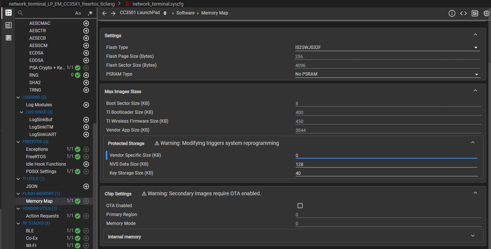
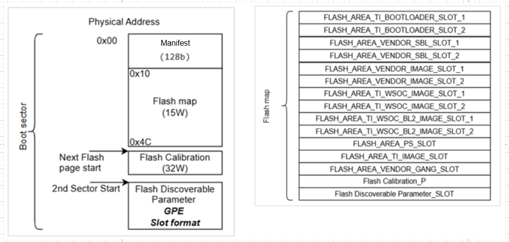
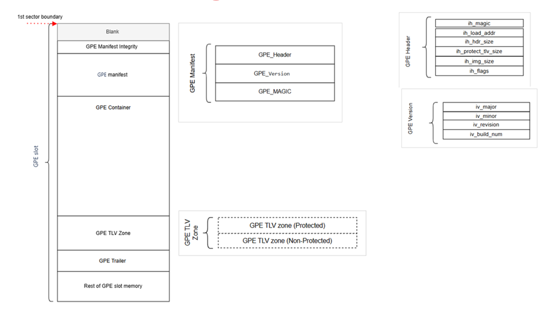
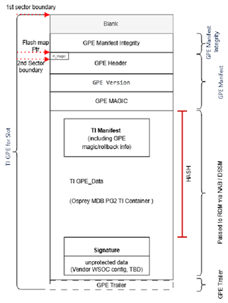
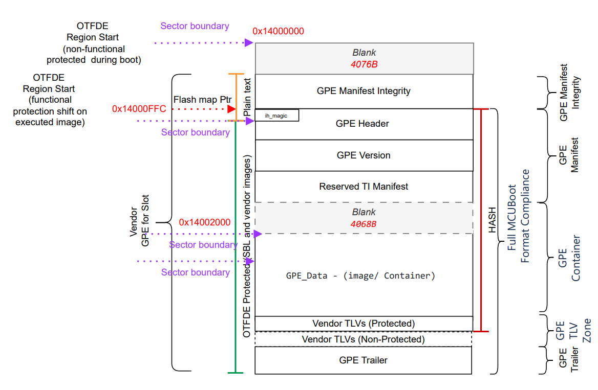
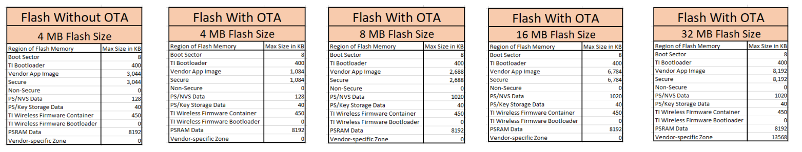

Flash Mapping & Boot-Sector¶
Introduction¶
The CC35xx device utilizes external flash to store images, bootloaders, data, keys, and more. External flash allows customers to choose any compatible external flash they want, providing customers greater flexible in memory management. Wi-Fi applications also generally require a lot of memory, which will take up too much space if the flash was on the chip itself.
Because the image is stored externally, there needs to be a way for our device to execute instructions from the flash, but due to size constraints, we do not copy the code in its entirety into on-chip memory. Instead, we eXecute In Place (XIP) in a manner where we first check and see if the instruction is cached. If it is, we just execute it, but if not, then we read the section from external memory via a dedicated hardware engine which decrypts and brings the instruction for the device to execute.
Flash Memory Regions¶
There are six key sections in the external flash:
- Boot Region
- Bootloaders (2)
- TI Wireless Firmware (2)
- General Purpose Storage Region
- Code Region (2)
For sections that appear with a “(2)” beside the name (bootloaders, wireless firmware, & code region), they serve the purpose of allowing firmware updates (FWU / OTA) functionality. For more information about FWU, please see the Over The Air Guide
Boot Region¶
The boot region describes information used by the bootloader, things such as what is on the flash, where are things stored, what flash is connected to the device, as well as what parameters to set in order to tune the interface to the flash to ensure correct operations.
Note
Note that this region CANNOT be updated via OTA.
- This is because if you use a different boot sector such that it alters sizes of regions (such as the code region), you will completely corrupt the memory.
Bootloader¶
Bootloader section holds the bootloader, the code that defines how the boot process works and is executed.
TI Wireless Firmware¶
Firmware section holds the firmware for the RF core of the devices
Code Region¶
Code region is where the application image goes, but the device also uses the idea of a trust zone, where you can split an application into privileged and non-privileged sections of code. Privileged means that a particular section of code needs to access more things on the chip that may be more sensitive, whereas non privileged means you cannot access certain parts of the chip. The aim is to provide some layer of security against malicious users trying to sabotage a device.
General Purpose Storage Region¶
This region contains 3 sections:
- NVS / Secure Protected Storage
- Key Storage
- Vendor Specific Region
The NVS section which allows vendors to store their own data using the nvocmp APIs. To properly interact with the NVS section using our APIs and drivers, please see this section about Non-volatile Storage.
The key storage section holds cryptographic keys and certificates. For more information about the key storage section, see Key Storage in the HSM.
The “Vendor Specific” section is similar to the NVS section except it can be fully customized. It does not require the use of the nvocmp driver. The developer or “vendor” is responsible for defining how data is organized in this section.
For any encryption done in this region, it will be handled by the HSM.
Changing the size of these general purpose sections can be done in the syscfg file under Protected Storage

Note
This is the only memory region in which you can alter the sizes of the sections within it (ie NVS section, vendor specific section, and key storage). Demo Applications may not work properly if changing the memory sizes of the NVS and Key Storage
Formatting of Region¶
Each region of the flash memory listed above follows a certain format. Some follow GPE format (more on that later) while others use a variation of it or don’t follow it at all.
- GPE-formatted: Code regions, general purpose storage
- GPE-variation-formatted: Bootloader region, TI wireless firmware region
- Non-GPE-formatted: Boot sector
Note
GPE format is based on the MCUBoot format. For more information about MCUBoot format, please click here.
Below are images of the format of each region to help you better understand:
- Boot sector

GPE slot format:

- TI bootloader and wireless firmware use the variation below

- Application Code Slot

- General Purpose Storage follows the GPE slot format shown above
Flash Setup & Wi-Fi Toolbox¶
As you may be aware, there are different flash chips that are compatible with our device, and they are all different sizes. How are the sizes of each region defined? The Wi-Fi toolbox (during factory programming) always programs the boot sector, which essentially sets up the sizes of all memory regions of the corresponding flash chips. Below are the sizes of the different regions based on the flash chip sizes:

However, as seen in the technical reference manual, up to 64 MB of flash is supported.
Pitfalls & Mistakes to Avoid¶
- As mentioned earlier, do NOT try to OTA the boot sector
- You may corrupt your memory if you do so, so we will not let you
- You may accidentally find yourself attempting to work outside of the designated memory sizes for an intended section
- Do not worry! The xmem driver defines how you interact with external flash and therefore will prevent you from writing past regions of a specific memory region